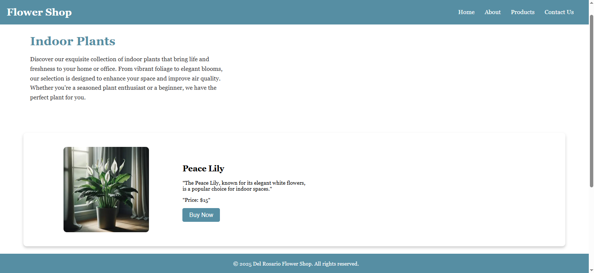

Flower Shop
The website is a simple flower shop design that showcases different indoor plants with their names, pictures, and prices. It has clear sections like Home, About, Products, and Contact Us, making it easy to explore and understand what the shop offers. The goal of the site is to present the plants in a neat and visually pleasing way, while also giving visitors the basic information they need if they were interested in buying.